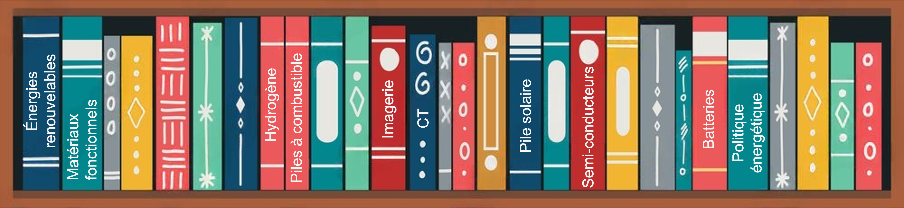
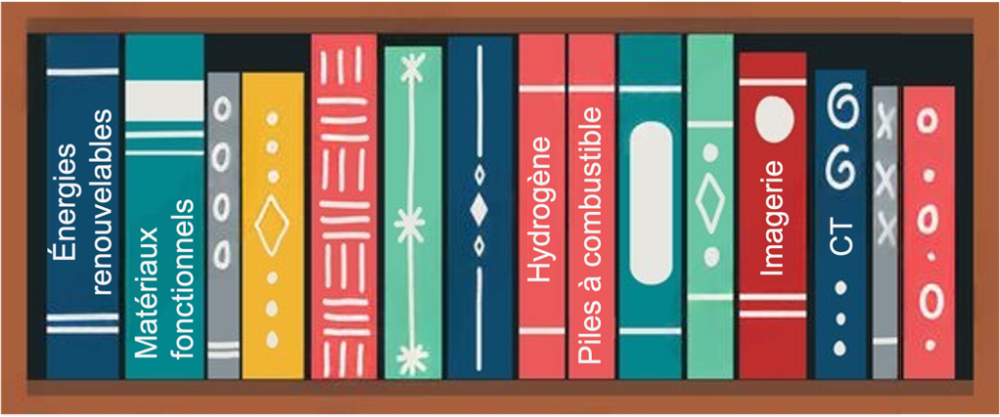

Aperçu de la Recherche
Système énergétique à faible émission de carbone, hydrogène-électricité, orienté vers le réseau

Publications
- Énergie renouvelable / Électrochimie
-
S. N. Artigas, H. Xu* [FDB], F. Mack
Utilisation de l'analyse de la distribution des temps de relaxation comme outil de diagnostic in situ pour la gestion de l'eau dans les applications des piles à combustible PEM [J]
Co-auteur :[Freudenberg] | Citée par :[Univ. Tsinghua]
2024 | J. Power Sources [PDF] -
H. Xu* [PSI], M. Bührer, F. Marone, Prof. T. J. Schmidt, F. N. Büchi, J. Eller
Effets des substrats de la couche de diffusion des gaz sur la gestion de l'eau des PEFC : Partie II. Désaturation de l'eau liquide in situ via évaporation [J]
Co-auteur :[Source de lumière suisse] | Citée par :[TOYOTA] [BOSCH]
2022 | J. Electrochem. Soc. [PDF] -
S. van Rooij, M. Magnini, A. Mularczyk, H. Xu* [PSI], F. N. Büchi [PSI], Prof. S.
Haussener
[EPFL]
Transfert de chaleur conductif dans des couches de diffusion de gaz partiellement saturées avec refroidissement par évaporation [J]
Co-auteur :[Source de lumière suisse] [EPFL]
2022 | J. Electrochem. Soc. [PDF] -
H. Xu* [PSI], S. Nagashima [TOYOTA], H. Nguyen, K. Kishita, F. Marone, F. N. Büchi, J.
Eller [PSI]
Mécanisme de transport de l'eau dépendant de la température dans les couches de diffusion de gaz PEFC révélé par microscopie tomographique opérando en subsecondes [J]
Co-auteur :[TOYOTA] | Citée par :[BOSCH] [Univ. Tsinghua] [Univ. de Toronto]
2021 | J. Power Sources [PDF] -
H. Xu* [PSI], M. Bührer, F. Marone, Prof. T. J. Schmidt [ETH], F. N. Büchi, J. Eller
[PSI]
Effets des substrats de la couche de diffusion des gaz sur la gestion de l'eau des PEFC : Partie I. Saturation de l'eau liquide opérando et propriétés de diffusion des gaz [J]
Co-auteur :[Source de lumière suisse] | Citée par :[Centre aérospatial allemand] [TOYOTA] [Univ. Tsinghua]
2021 | J. Electrochem. Soc. [PDF] -
C. Csoklich, H. Xu* [PSI], F. Marone, Prof. T. J. Schmidt [ETH], F. N. Büchi [PSI]
Couches de diffusion de gaz structurées au laser pour une meilleure gestion de l'eau et performance des piles à combustible [J]
Co-auteur :[Source de lumière suisse] | Citée par :[Institut de Technologie de Tokyo] [Univ. des Sciences et Technologies de Hong Kong] [Univ. Tsinghua]
2021 | ACS Appl. Energy Mater. [PDF] -
Y. Nagai [TOYOTA], J. Eller, T. Hatanaka, S. Yamaguchi, S. Kato, F. Marone, H. Xu*
[PSI],
F. N. Büchi.
Amélioration de la gestion de l'eau dans les piles à combustible grâce à des modifications de la couche microporeuse : Imagerie tomographique opérando rapide de l'eau liquide. [J]
Co-auteur :[TOYOTA] | Citée par :[MIT] [Centre aérospatial allemand] [State Power Investment Co.]
2019 | J. Power Sources [PDF]
- Imagerie computationnelle / Deep Learning
-
M. Bührer, H. Xu* [PSI], A. Hendriksend, F. N. Büchi, J. Eller, Prof. M. Stampanoni
[ETH],
F. Marone [SLS]
Classification basée sur l'apprentissage profond des processus dynamiques en XTM résolu en temps [J]
Co-auteur :[Source de lumière suisse/PSI] [CWI Amsterdam] | Citée par :[Univ. Stanford] [RWTH Aix-la-Chapelle]
2021 | Scientific Reports [PDF] -
M. Bührer, H. Xu* [PSI], J. Eller, Prof. J. Sijbers, Prof. M. Stampanoni [ETH], F.
Marone
[SLS]
Révélation de la dynamique de l'eau dans les piles à combustible à partir des données de microscopie tomographique résolue en temps [J]
Co-auteur :[Source de lumière suisse/PSI] [Univ. d'Anvers] | Citée par :[Univ. de Tokyo] [Univ. de Toronto]
2021 | Scientific Reports [PDF] -
H. Xu* [PSI], M. Bührer, F. Marone, Prof. T. J. Schmidt [ETH], F. N. Büchi, J. Eller
[ETH]
Dénombrement optimal des images pour le XTM opérando de l'eau liquide dans les couches de diffusion des gaz des PEFC. [J]
Co-auteur :[Source de lumière suisse/PSI] | Citée par :[Institut de physique chimique de Dalian, CAS] [Univ. de Toronto] [Univ. College de Londres]
2020 | J. Electrochem. Soc. [PDF] -
H. Xu* [PSI], F. Marone, S. Nagashima, H. Nguyen, K. Kishita, F. N. Büchi, J. Eller
(Invité) Exploration de l'imagerie XTM sub-seconde et sub-micronique de l'eau liquide dans les GDLs des PEFC. [J]
Co-auteur :[Source de lumière suisse/PSI] [TOYOTA] | Citée par :[Installation européenne de rayonnement synchrotron] [Centre national de recherche sur les piles à combustible des États-Unis] |[Prix de voyage ECS Meeting]
2019 | ECS Transactions [PDF] -
H. Xu* [PSI], M. Bührer, F. Marone, Prof. T. J. Schmidt [ETH], F. N. Büchi, J. Eller
[PSI]
Combattre le bruit : vers les limites de la microscopie tomographique à rayons X sub-seconde des PEFC
Co-auteur :[Source de lumière suisse/PSI] | Citée par :[Laboratoire national d'Argonne] [TOYOTA] |[Source de lumière suisse] |[Prix du meilleur poster ModVal]
2017 | ECS Transactions [PDF]
- Science des matériaux / Génie chimique
-
Prof. H. Zhang, R. Wu, H. Xu* [BJTU], F. Li, S. Wang, J. Wang [BJUT], T. Zhang
Une simple synthèse par réaction de pulvérisation et caractérisation de microsphères hiérarchiquement poreuses de SnO2 pour une cellule solaire sensibilisée aux colorants améliorée. [J]
2017 | RSC Advances [PDF][BJTU] -
Prof. H. Zhang [BJTU], H. Xu* [BJTU], J. Wan, Prof. L. Yan, C. Dai
Préparations de nouvelles poudres sphériques d'oxydes poreux par technique de réaction de pulvérisation
2012 | Vide et Cryogénie [Lien][BJTU] -
Q. Xiaoyue, H. Xu* [BJTU], X. Zhou
Dégradation de la cyperméthrine hautement active par irradiation ultrasonique combinée à la photocatalyse par TiO2
2012 | Recherche en Chimie [Lien][BJTU]
Brevets
- Brevets européens :
-
Une nouvelle méthode (non divulguée)
Inventeurs : H. Xu et al.
2025 | Brevet UE : En instance, demande déposée auprès de l’Office européen des brevets (OEB) -
Un nouveau matériau (non divulgué)
Inventeurs : H. Xu et al.
2025 | Brevet UE : En instance, demande déposée auprès de l’Office européen des brevets (OEB)
- Brevets chinois :
-
Dispositif annulaire de séparation magnétique par jigging à interface gaz-liquide
[P]
Inventeurs : Prof. M. Fu, Prof. H. Zhang, H. Xu (BJTU), Prof. L. Yan
2013 | Brevet chinois n° : CN102441489B, Accordé le 11 oct. 2013. [Délivrance] -
Dispositif annulaire à interface gaz-liquide fonctionnant en continu pour la séparation
magnétique par
jigging [P]
Inventeurs : Prof. H. Zhang, H. Xu (BJTU), Prof. M. Fu, Prof. L. Yan
2013 | Brevet chinois n° : CN102441490A, Accordé le 1 nov. 2013. [Délivrance] -
Dispositif de nettoyage de fruits et légumes couplé à l’oxydation ultrason-photocatalytique
[P]
Inventeurs : X. Zhou, H. Xu (BJTU), Prof. H. Jiang, X. Qi
2012 | Brevet chinois n° : CN202311136U, Accordé le 9 mai 2012. [Délivrance]
Rapports techniques
-
H. Xu [TUM], Dr. B. Vinçon-Leite, Y. Luo
Modélisation de la dynamique des cyanobactéries pour le réservoir de YuQiao à Tianjin, Chine [R]
2016 | Rapport de formation.[École des Ponts ParisTech] &[École Polytechnique] . Paris, France. -
H. Xu [UR1], Dr. W. Lu, Dr. A. Madsen, Prof. S. Di Matteo
Conception et construction d'un banc de test pour la ligne de séparation et de retardement au XFEL européen [R]
2015 | Rapport de stage.[XFEL européen] , Hambourg, Allemagne. [PDF]
Recherche d'actions
- Recherche Macroéconomique Industrielle (Région de la Grande Chine) :
2022 | Industrie des Nouvelles Énergies : Forces motrices pour l'entrepreneuriat dans l'industrie des nouvelles énergies en Chine sous la politique du double carbone
2020 | Industrie des Nouveaux Matériaux : Série sur les matériaux semi-conducteurs Partie 4 : La 5G stimule la chaîne industrielle de la communication optique, les matériaux au phosphure d'indium prêts à croître
- Recherche sur le Marché Primaire (Entreprises financées de Série A à D) :
2021 | UISEE Technology : Rapport de la série pionnière en technologie sur UISEE Technology : Fournisseur de solutions de conduite autonome multi-scénarios
2021 | SemiDrive Technology : Rapport de la série pionnière en technologie sur SemiDrive Technology : Fournisseur de puces IP autonomes pour véhicules intelligents
2021 | Xi'an ESWIN Semiconductors : Rapport d'analyse de recherche sur Xi'an ESWIN Semiconductors
- Recherche sur le Marché Secondaire (Entreprises cotées en Chine et aux États-Unis)
:
2021 | National Silicon Industry (688126.SH) : Pionnier de premier plan des grandes plaquettes de silicium, stimulant la localisation des puces (Rapport de couverture initiale)
2021 | CREE (NASDAQ:CREE) : Rapport de la série pionnière en technologie sur CREE : Fournisseur mondial de dispositifs de puissance/RF et de LED (Stock américain)
2021 | Jingwei Hirain (688326.SH) : Rapport de la série pionnière en technologie sur Jingwei Hirain Technology : Fournisseur de systèmes technologiques pour l'électronique automobile
2020 | TankeBlue (870013.OC) : Principal fabricant domestique de plaquettes SiC
2020 | Hangzhou Li-on Microelectronics (605358.SH) : Marché vaste pour la substitution domestique, industrialisation imminente des grandes plaquettes de silicium
2020 | Shandong Sinocera (300285.SZ) : Industrie des matériaux céramiques dentaires, tendances favorables pour les matériaux en zircone
Jeux de données publics
-
TomoBank: Jeu de données d'imagerie par rayons X de piles à combustible
Conservateurs: M. Bührer, H. Xu* [PSI], F. Marone
2019 | Département de l'Énergie des États-Unis - Laboratoire National d'Argonne © Droits d'auteur. Rev. f4253f55. [Lien]
Assistant d'enseignement
-
Technologies des énergies renouvelables II, Stockage et Conversion de l'énergie
École polytechnique fédérale de Zurich, Cours de Master (529-0191-01L )
2017-2019 | Semestre de printemps [Lien]
Conférences
- Électrochimie / Physique / Science des Matériaux :
-
H. Xu [PSI], M. Bührer, F. Marone, T. J. Schmidt, F. N. Büchi, J. Eller
Influence de la distribution de la taille des pores sur la saturation liquide GDL en operando.
2019 | 236ème Réunion de la Société Électrochimique (ECS), Atlanta, États-Unis. [Orateur] [Lien] -
H. Xu [PSI], M. Bührer, F. Marone, T. J. Schmidt, F N. Büchi, J. Eller
Avancées dans l'imagerie tomographique operando à 10Hz des GDL de PEFC.
2018 | 8ème Conférence Internationale sur les Fondamentaux et le Développement des Piles à Combustible (FDFC), Nantes, France. [Orateur] [Lien] -
H. Xu [PSI], M. Bührer, F. Marone, T. J. Schmidt, F N. Büchi, J. Eller
Études de la distribution de l'eau dans la couche de diffusion des gaz des PEFCs à l'aide de la microscopie tomographique à rayons X
2018 | 69ème Réunion Annuelle de la Société Internationale d'Électrochimie (ISE), Bologne, Italie. [Poster] [Lien] -
H. Xu [PSI], M. Bührer, F. Marone, T. J. Schmidt, F N. Büchi, J. Eller
Distribution de l'eau dans la couche de diffusion des gaz des PEFCs : Études de microscopie tomographique à rayons X
2018 | 15ème Symposium sur la Modélisation et la Validation Expérimentale des Piles à Combustible (ModVal), Aarau, Suisse. [Prix du Meilleur Poster] [Lien] -
H. Xu [PSI], M. Bührer, F. Marone, T. J. Schmidt, F. N. Büchi, J. Eller
Quantification de la détectabilité des caractéristiques pour la microscopie tomographique à rayons X des PEFC en sous-seconde.
2017 | 6ème Forum Européen PEFC et Électrolyseur (EFCF), Lucerne, Suisse. [Orateur] [Lien] -
H. Xu [PSI], M. Bührer, F. Marone, T. J. Schmidt, F. N. Büchi, J. Eller
Évaluation du rapport contraste-bruit pour l'imagerie tomographique à rayons X de l'eau dans les piles à combustible à électrolyte polymère
2017 | 14ème Symposium sur la Modélisation et la Validation Expérimentale des Piles à Combustible (ModVal), Karlsruhe, Allemagne. [Poster] [Lien] -
H. Xu [TUM], E. Metwalli, P. Müller-Buschbaum
Polymères diblocs thermoréactifs incorporant des nanoparticules pour une application de capteur magnétique.
2016 | Réunion Annuelle du Projet EU Erasmus MaMaSELF, Mont Rigi, Suisse. [Orateur] [Lien] -
H. Xu [TUM], E. Metwalli, P. Müller-Buschbaum
Propriétés magnétiques et structure de films minces nanocomposites à base de polystyrène-block-poly(N-isopropylacrylamide)/oxyde de fer thermoréactifs.
2016 | 80ème Réunion Annuelle de la Société Allemande de Physique & Réunion de Printemps (DPG), Ratisbonne, Allemagne. [Poster] [Lien] -
H. Xu [BJTU], Prof. H. Zhang, R. Wu
Microsphères mésoporeuses de SnO2 : Synthèse, caractérisation et application dans des cellules solaires à colorant sensibilisé et des batteries au lithium.
2013 | Seminaire sur les Particules Énergétiques de l'Université Tsinghua, Pékin, Chine. [Poster] [Lien]